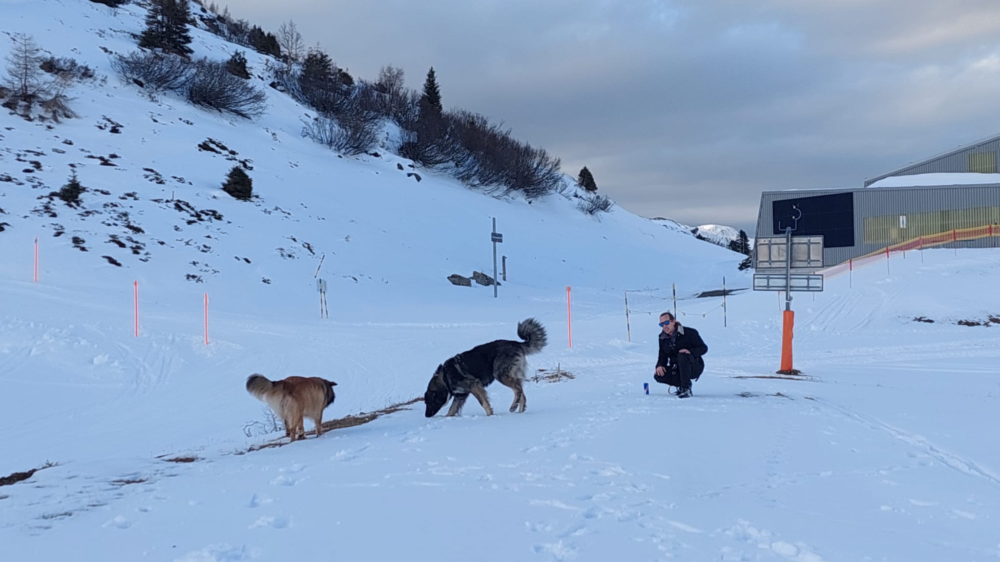

Assess
I look at your current riding level and starting point so we can choose the right focus for the session.

Good snowboard instruction starts with the person, not a fixed lesson plan. I adapt the session to your ability, goals, confidence and the conditions on the mountain.
Before we start chasing perfect turns, I want to know who is standing on the board. Every rider is different, and the best lessons usually start with a good conversation.
We start by getting to know each other: your experience, what you enjoy, what you want to improve and what makes you feel comfortable on the mountain. I also want to understand how you actually ride, from your stance and movement to your confidence on the board, so we can make the lesson useful from the first run. And yes, we will work out whether you are regular or goofy — it matters. At least to snowboarders. I am also a native English speaker teaching in the middle of the Swiss Alps, so if your German disappears somewhere between Churwalden and Lenzerheide, don't worry — English is right at home here.
Once we know where you are starting, we can actually get to work. This is where we turn “I want to get better at snowboarding” into something we can work on together.
I look at your current riding level and starting point so we can choose the right focus for the session.
We set a clear goal together and I adapt it to your level, experience and confidence.
I demonstrate the movement and break it down into clear, practical instruction so you can understand what to do.
I give useful, motivating feedback and adjust the exercise as you develop.
Snowboarding does not happen in a training room. We take what you are learning onto the mountain and adapt the session to the snow, terrain and conditions.
Book a lessonThe mountain changes. We choose terrain and exercises that make sense for the conditions and your ability.
Good riding includes awareness of other skiers and snowboarders, signs, stopping safely and adapting your speed to the situation.
The goal is to help you understand the mountain and make better decisions for yourself, not simply follow an instructor down the slope.
We start with where you are, work towards a clear goal, practise the movement and then take it onto the mountain. The session changes with you.
Book a lesson →